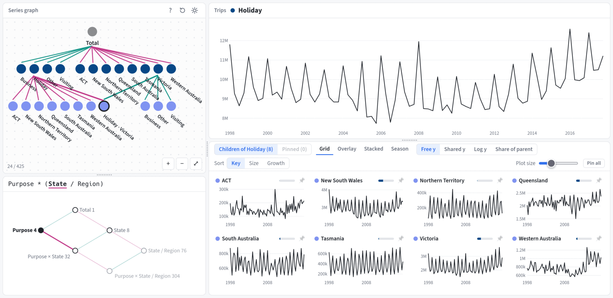

grafts (graph forecasts for time series) is an interactive browser app for exploring aggregated time series, such as hierarchical, grouped and nested series, and their forecasts.

Installation
You can install the development version of grafts from GitHub with:
# install.packages("pak")
pak::pak("mitchelloharawild/grafts")Usage
grafts explores time series stored in a tsibble whose keys have been aggregated with aggregate_key(). Any structure of keys works, whether hierarchical (State / Region), grouped (Purpose * State) or a mix of both.
library(grafts)
library(fable)
tourism_agg <- aggregate_key(
tsibble::tourism, Purpose * (State / Region), Trips = sum(Trips)
)
app <- graph_explore(tourism_agg)graph_explore() opens the explorer in a browser. The data stays in R, which serves each series only when it is drawn, so large collections of series open quickly. The app runs in the background until it is stopped with:
plumber2::api_stop(app)To also explore forecasts, pass a fable of forecasts for those series to forecasts. Each model’s forecasts and intervals are drawn after the data.
tourism_fc <- tourism_agg |>
model(ets = ETS(Trips), snaive = SNAIVE(Trips)) |>
forecast(h = "2 years")
app <- graph_explore(tourism_agg, forecasts = tourism_fc)Exploring
The explorer starts from the total of all series. Its left side shows the series graph, where each node is a series and its children sum to it. Clicking a node lists the ways it can be split, such as by Purpose or State, and choosing one adds those disaggregates to the graph. Below it, the dimension graph shows the structure of keys and highlights where the explorer is.
The right side plots the series being explored above its disaggregates, which can be shown as small multiples, overlaid, stacked (to see what each contributes to the total) or as seasonal plots. Clicking a time plot focuses that series, and hovering a node highlights its series wherever it is plotted. Right-clicking a node collapses its children, and shift-clicking pins it so series from different parts of the graph can be compared side by side.